6' 1" · A big friendly werewolf who lives for the howling chorus of classic rock anthems; goofy, eager and loyal, more golden retriever than monster. Broad-chested and shaggy with long arms, a deep chest tapering to a narrower waist, and digitigrade wolf legs, standing upright and level like the rest of the roster with weight even over both feet; never crouched, hunched, prowling or on all fours. His recognition cues are a full wolf head with a long muzzle, tall pointed ears standing upright, a shaggy grey-brown coat with a lighter cream chest and muzzle, one dark brown patch around the character-left eye, a bushy tail, and a torn red plaid flannel shirt, all readable without facial detail. No hat or headwear. He wears a red plaid flannel shirt with the sleeves ripped off at the shoulders and a few ragged tears across the back, worn open over the cream chest fur, and faded blue jeans torn off raggedly at mid-shin; his large clawed wolf feet are bare, and a loose red bandana is knotted around his neck. The claws are short and blunt. He holds one wireless handheld microphone upright in his large furry character-right paw-hand; no cord, no stand. His ready stance is upright and eager, feet planted, chest open, ears up, tail raised in a happy curve, the free character-left hand relaxed at the side, and a big open-mouthed friendly grin with the tongue just showing. Palette, as base/shadow/highlight per material: fur #7C6E62 / #463D36 / #A89A8C; cream fur #D8CBB4 / #A1937D / #F2E8D6; eye patch #4A3526 / #271B13 / #6E5240; plaid red #B3262B / #6E1418 / #DE4F52; plaid dark #20232B / #101217 / #3A3E48; denim #4A6A98 / #2A3F5E / #7896C2; bandana #C0302F / #751A1A / #E5625F; claws #3A3634 / #1C1A19 / #5E5A57; nose #1B1A1E; tongue #C9606B; eye amber #E0A030; metal #6F747C / #34383E / #B5BAC0. Never draw: blood, gore or prey; bared fangs in a snarl, a threatening glare or raised hackles; long sharp or hooked claws; a crouched, hunched, prowling or four-legged posture; a full moon or night backdrop; human hair or a human face; shoes; a shirt left intact or buttoned closed; the microphone in the character-left hand; a microphone cord, stand or duplicate microphone; logos, text or real brands.
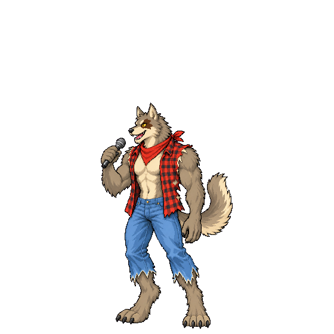
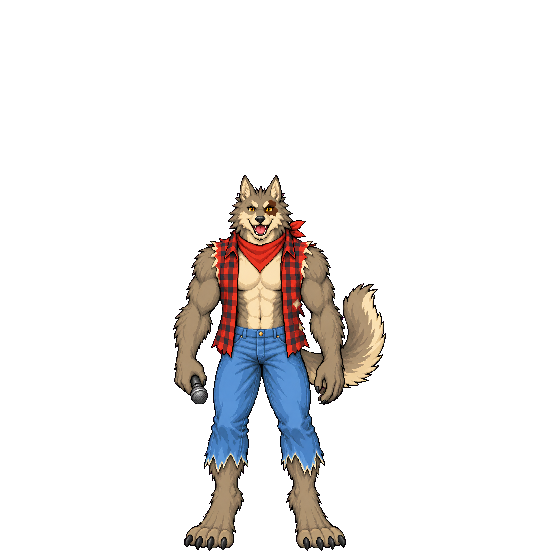
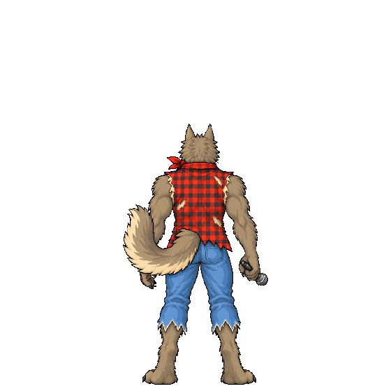
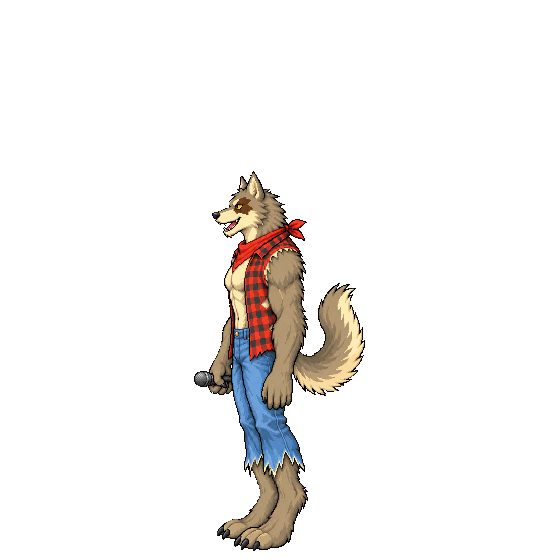
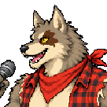
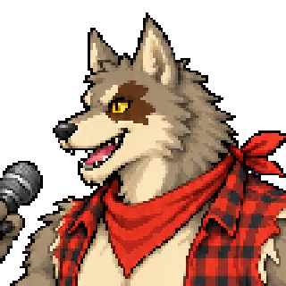
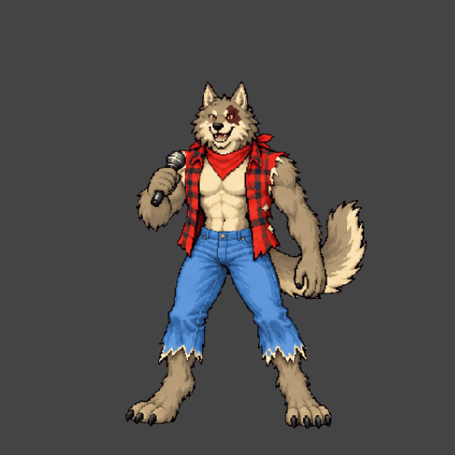
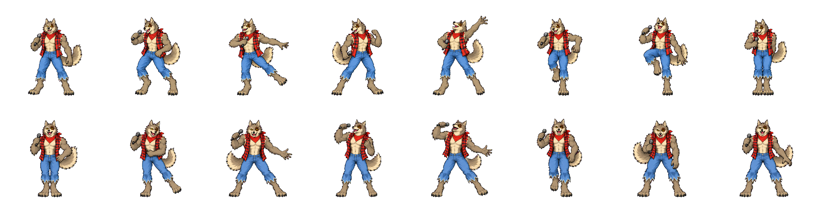
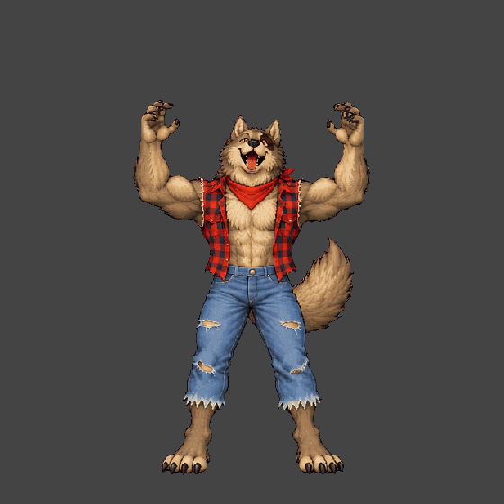
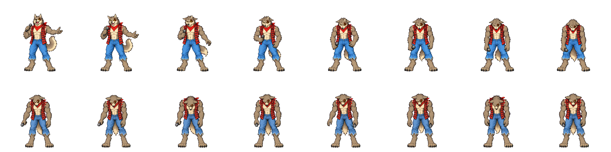
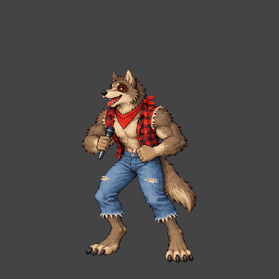
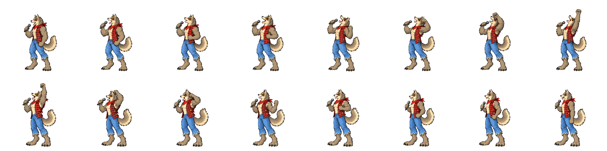
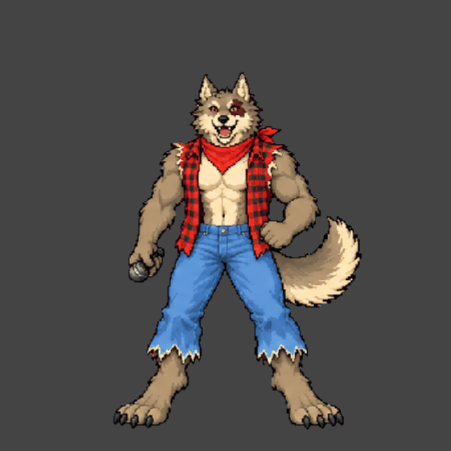
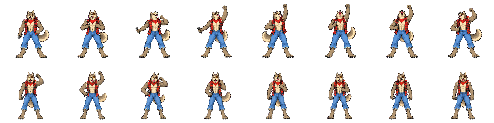